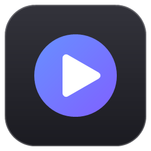
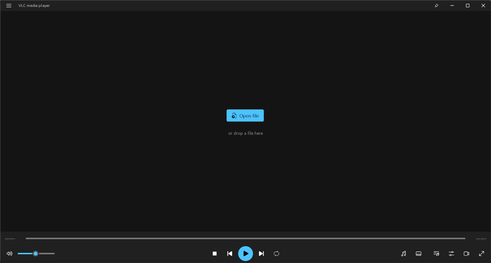

HeMi DarkBeta
A dark, minimal skin for VLC media player 3 in the style of Windows 11: a clean player window, playlist, equalizer and full-screen controls.
VLC 3.0 for Windows. One zip with every colour and scaling – set the one you like in VLC in a minute (see below). Also in HeMi Launcher.

What it has
Player
Title bar with the menu of VLC, always on top, the video with “Open file” and drag and drop, and one bar with seek, volume and every control.
Playlist and equalizer
A flat playlist in the accent colour, and an equalizer with a preamp and ten bands.
Full screen
A slim controller with seek, volume, playback, audio, subtitles and video.
9 colours × 6 scalings
Blue, teal, green, yellow, orange, red, pink, purple and graphite – for 100, 125, 140, 150, 175 and 200 % display scaling.
Set it up
- Unpack HeMiDark-Skins.zip and pick a colour folder and the file for your scaling (Settings → System → Display → Scale).
- VLC → Tools → Preferences → Interface → Use custom skin → choose the .vlt → Save → restart VLC.
- Back to the usual look: the menu at the top left → Tools → Preferences → Use native style.